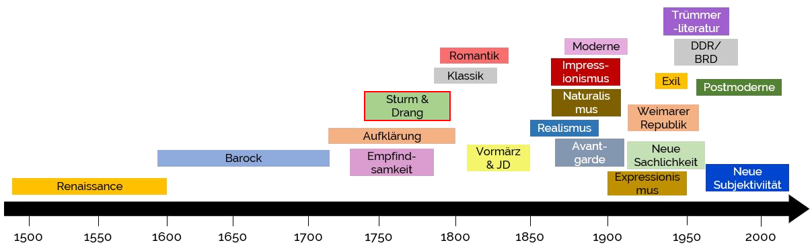
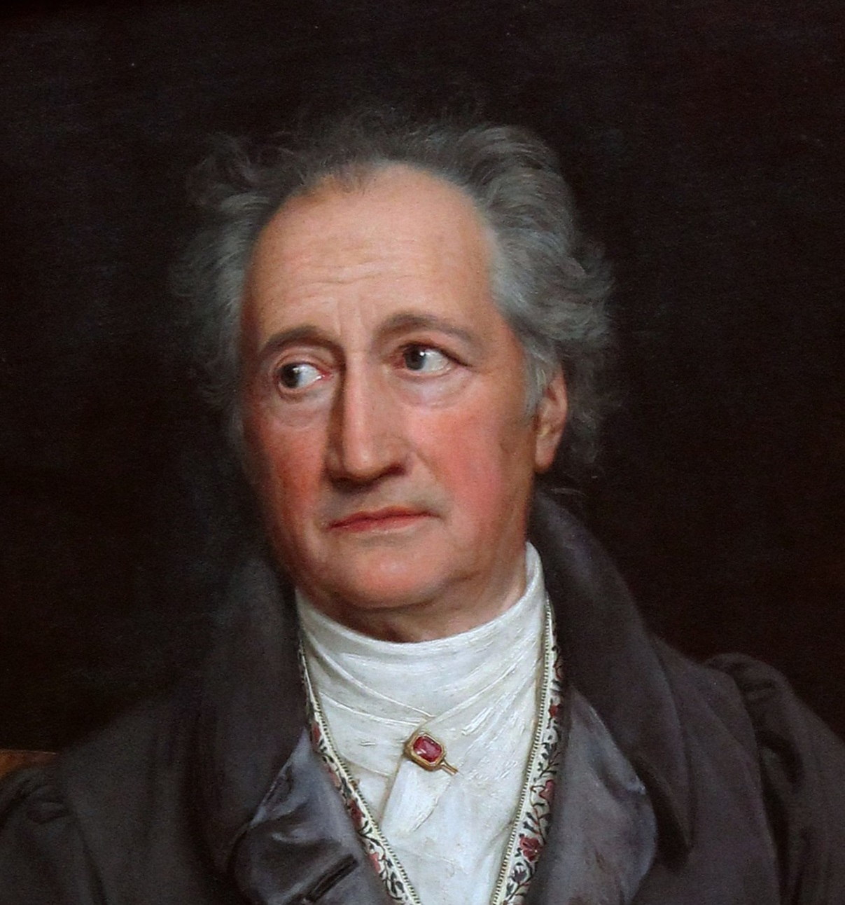

<!DOCTYPE html>
<html lang="en">
  <head>
    <meta charset="utf-8" />
    <meta name="viewport" content="width=device-width, initial-scale=1.0, maximum-scale=1.0, user-scalable=no" />

    <title></title>
    <link rel="stylesheet" href="dist/reveal.css" />
    <link rel="stylesheet" href="dist/theme/serif.css" id="theme" />
    <link rel="stylesheet" href="plugin/highlight/zenburn.css" />
	<link rel="stylesheet" href="css/layout.css" />
	<link rel="stylesheet" href="plugin/customcontrols/style.css">

	<link rel="stylesheet" href="plugin/reveal-pointer/pointer.css" />


    <script defer src="dist/fontawesome/all.min.js"></script>

	<script type="text/javascript">
		var forgetPop = true;
		function onPopState(event) {
			if(forgetPop){
				forgetPop = false;
			} else {
				parent.postMessage(event.target.location.href, "app://obsidian.md");
			}
        }
		window.onpopstate = onPopState;
		window.onmessage = event => {
			if(event.data == "reload"){
				window.document.location.reload();
			}
			forgetPop = true;
		}

		function fitElements(){
			const itemsToFit = document.getElementsByClassName('fitText');
			for (const item in itemsToFit) {
				if (Object.hasOwnProperty.call(itemsToFit, item)) {
					var element = itemsToFit[item];
					fitElement(element,1, 1000);
					element.classList.remove('fitText');
				}
			}
		}

		function fitElement(element, start, end){

			let size = (end + start) / 2;
			element.style.fontSize = `${size}px`;

			if(Math.abs(start - end) < 1){
				while(element.scrollHeight > element.offsetHeight){
					size--;
					element.style.fontSize = `${size}px`;
				}
				return;
			}

			if(element.scrollHeight > element.offsetHeight){
				fitElement(element, start, size);
			} else {
				fitElement(element, size, end);
			}		
		}


		document.onreadystatechange = () => {
			fitElements();
			if (document.readyState === 'complete') {
				if (window.location.href.indexOf("?export") != -1){
					parent.postMessage(event.target.location.href, "app://obsidian.md");
				}
				if (window.location.href.indexOf("print-pdf") != -1){
					let stateCheck = setInterval(() => {
						clearInterval(stateCheck);
						window.print();
					}, 250);
				}
			}
	};


        </script>
  </head>
  <body>
    <div class="reveal">
      <div class="slides"><section  data-markdown><script type="text/template"><!-- .slide: class="drop" data-auto-animate="true" -->
<div class="" style="position: absolute; left: 0px; top: 0px; height: 700px; width: 960px; min-height: 700px; display: flex; flex-direction: column; align-items: center; justify-content: center" absolute="true">

# Sturm und Drang
#### von Nico, Felix, Tabea und Hams
</div></script></section><section  data-markdown><script type="text/template"><!-- .slide: class="drop" data-auto-animate="true" -->
<div class="" style="position: absolute; left: 0px; top: 0px; height: 700px; width: 960px; min-height: 700px; display: flex; flex-direction: column; align-items: center; justify-content: center" absolute="true">

# Sturm und Drang
- &shy;<!-- .element: class="fragment" data-fragment-index="1" -->**1765 - 1785**
- &shy;<!-- .element: class="fragment" data-fragment-index="2" -->betonte Gefühle
- &shy;<!-- .element: class="fragment" data-fragment-index="3" -->freies Denken, Selbstbestimmung
- &shy;<!-- .element: class="fragment" data-fragment-index="4" -->Kritik an politischen und gesellschaftlichen Verhältnissen
- &shy;<!-- .element: class="fragment" data-fragment-index="5" -->junge, rebellische Libreale
- &shy;<!-- .element: class="fragment" data-fragment-index="6" -->auf den deutschprachigen Raum beschränkt
</div></script></section><section  data-markdown><script type="text/template"><!-- .slide: class="drop" -->
<div class="" style="position: absolute; left: 0px; top: 0px; height: 700px; width: 960px; min-height: 700px; display: flex; flex-direction: column; align-items: center; justify-content: center" absolute="true">

### Was bedeutet "Sturm und Drang"?
- &shy;<!-- .element: class="fragment" data-fragment-index="1" -->auch "Sturm und Aufbruch"
- &shy;<!-- .element: class="fragment" data-fragment-index="2" -->1776: Drama "Sturm und Drang" von Friedrich Maximilian Kluger → namensgebend
- &shy;<!-- .element: class="fragment" data-fragment-index="3" -->turbulente, rebellische Gefühle
- &shy;<!-- .element: class="fragment" data-fragment-index="4" -->Widerstand gegen Autorität und Tradition
- &shy;<!-- .element: class="fragment" data-fragment-index="5" -->individueller Freiheitsdrang
</div></script></section><section  data-markdown><script type="text/template"><!-- .slide: class="drop" -->
<div class="" style="position: absolute; left: 0px; top: 0px; height: 700px; width: 960px; min-height: 700px; display: flex; flex-direction: column; align-items: center; justify-content: center" absolute="true">

### Typische literarische Merkmale
- &shy;<!-- .element: class="fragment" data-fragment-index="1" -->**zentrale Textsorte:** Drama
- &shy;<!-- .element: class="fragment" data-fragment-index="2" -->Subjektivität und Emotionalität
	- &shy;<!-- .element: class="fragment" data-fragment-index="3" -->Leidenschaftliche, rebellische Sprache
	- &shy;<!-- .element: class="fragment" data-fragment-index="4" -->Halbsätze, Ausrufe und Kraftausdrücke
- &shy;<!-- .element: class="fragment" data-fragment-index="5" -->Ich-Bezug
- &shy;<!-- .element: class="fragment" data-fragment-index="6" -->Natur
- &shy;<!-- .element: class="fragment" data-fragment-index="7" -->Dramatik und Konflikt
- &shy;<!-- .element: class="fragment" data-fragment-index="8" -->Betonung der individuellen Freiheit
</div></script></section><section  data-markdown><script type="text/template"><!-- .slide: class="drop" -->
<div class="" style="position: absolute; left: 0px; top: 0px; height: 700px; width: 960px; min-height: 700px; display: flex; flex-direction: column; align-items: center; justify-content: center" absolute="true">

### Historischer Kontext


- &shy;<!-- .element: class="fragment" data-fragment-index="1" -->parallel zur Aufklärung und Empfindsamkeit
- &shy;<!-- .element: class="fragment" data-fragment-index="2" -->Protestbewegung gegen Aufklärung
</div></script></section><section  data-markdown><script type="text/template"><!-- .slide: class="drop" -->
<div class="" style="position: absolute; left: 0px; top: 0px; height: 700px; width: 960px; min-height: 700px; display: flex; flex-direction: column; align-items: center; justify-content: center" absolute="true">

<table>
    <thead>
      <tr>
        <th>Aufklärung</th> 
        <th>Sturm und Drang</th>
      </tr>
    </thead>
    <tbody>
      <tr style="fragment">
        <td>interlektuelle Bewegung</td>  <!-- .element: class="fragment" -->
        <td>literarische Bewegung</td>  <!-- .element: class="fragment" -->
      </tr>
      <tr fragment> 
        <td>Freiheit des Denkens, Gleicheit</td>  <!-- .element: class="fragment" -->
        <td>individuelle Freiheit, Emotionen</td> <!-- .element: class="fragment" -->
      </tr>
      <tr fragment> 
        <td>Gesellschaftsglaube</td> <!-- .element: class="fragment" -->
        <td>Individualismus</td> <!-- .element: class="fragment" -->
      </tr>
      <tr fragment> 
        <td>rational, vernunforientiert</td> <!-- .element: class="fragment" -->
        <td>Ausdruck von Emotionen, Impulsivität</td> <!-- .element: class="fragment" -->
      </tr>
      <tr fragment> 
        <td>objektive Wahrheit, Vernunft</td> <!-- .element: class="fragment" -->
        <td>subjektive Erfahrung, individuelle Perspektive</td> <!-- .element: class="fragment" -->
      </tr>
    </tbody>
  </table>
</div></script></section><section  data-markdown><script type="text/template"><!-- .slide: class="drop" -->
<div class="" style="position: absolute; left: 0px; top: 0px; height: 700px; width: 960px; min-height: 700px; display: flex; flex-direction: column; align-items: center; justify-content: center" absolute="true">

<div class="" style="position: absolute; left: 0%; top: 0%; height: 20%; width: 100%; display: flex; flex-direction: column; align-items: center; justify-content: center" >

### Authoren
</div>

<div class="" style="position: absolute; left: 0%; top: 32%; height: 50%; width: 48%; display: flex; flex-direction: column; align-items: center; justify-content: center" >
 <!-- .element: class="fragment" -->


Johann Wolfgang von Goethe
</div>
<div class="" style="position: absolute; left: 52%; top: 29%; height: 50%; width: 48%; display: flex; flex-direction: column; align-items: center; justify-content: center" >
 <!-- .element: class="fragment" -->


Friedrich Schiller
</div>
</div></script></section><section  data-markdown><script type="text/template"><!-- .slide: class="drop" -->
<div class="" style="position: absolute; left: 0px; top: 0px; height: 700px; width: 960px; min-height: 700px; display: flex; flex-direction: column; align-items: center; justify-content: center" absolute="true">

<div class="" style="position: absolute; left: 0%; top: 10%; height: 20%; width: 100%; display: flex; flex-direction: column; align-items: center; justify-content: center" >

### Bekannte Werke
</div>

<div class="" style="position: absolute; left: 0%; top: 28%; height: 80%; width: 48%; display: flex; flex-direction: column; align-items: center; justify-content: center" >
 <!-- .element: class="fragment" -->

### Die Leiden des jungen Werthers
Johann Wolfgang von Goethe
###### (1774)


</div>
<div class="" style="position: absolute; left: 52%; top: 25%; height: 80%; width: 48%; display: flex; flex-direction: column; align-items: center; justify-content: center" >
 <!-- .element: class="fragment" -->

### Baron Münchhausen
Rudolf Erich Raspe
###### (1785)

</div>
</div></script></section><section  data-markdown><script type="text/template"><!-- .slide: class="drop" -->
<div class="" style="position: absolute; left: 0px; top: 0px; height: 700px; width: 960px; min-height: 700px; display: flex; flex-direction: column; align-items: center; justify-content: center" absolute="true">

### Neue Liebe, neues Leben (1775)
###### Johann Wolfgang Goethe
</div></script></section><section  data-markdown><script type="text/template"><!-- .slide: class="drop" -->
<div class="" style="position: absolute; left: 0px; top: 0px; height: 700px; width: 960px; min-height: 700px; display: flex; flex-direction: column; align-items: center; justify-content: center" absolute="true">


</div></script></section><section  data-markdown><script type="text/template"><!-- .slide: class="drop" -->
<div class="" style="position: absolute; left: 0px; top: 0px; height: 700px; width: 960px; min-height: 700px; display: flex; flex-direction: column; align-items: center; justify-content: center" absolute="true">

Der Sturm und Drang ...
- &shy;<!-- .element: class="fragment" data-fragment-index="1" -->... betont Gefühle, rebellisches Verhalten und freies Denken
- &shy;<!-- .element: class="fragment" data-fragment-index="2" -->... ist eine Gegenbewegung zur Aufklärung bei der gegensätzliche Werte betont werden
- &shy;<!-- .element: class="fragment" data-fragment-index="3" -->... drückt Emotionalität in Texten durch leidenschaftliche und rebellische Sprache aus
</div></script></section><section  data-markdown><script type="text/template"><!-- .slide: class="drop" -->
<div class="" style="position: absolute; left: 0px; top: 0px; height: 700px; width: 960px; min-height: 700px; display: flex; flex-direction: column; align-items: center; justify-content: center" absolute="true">

### Danke für eure Aufmerksamkeit
</div></script></section><section  data-markdown><script type="text/template">
</script></section></div>
    </div>

    <script src="dist/reveal.js"></script>

    <script src="plugin/markdown/markdown.js"></script>
    <script src="plugin/highlight/highlight.js"></script>
    <script src="plugin/zoom/zoom.js"></script>
    <script src="plugin/notes/notes.js"></script>
    <script src="plugin/math/math.js"></script>
	<script src="plugin/mermaid/mermaid.js"></script>
	<script src="plugin/chart/chart.min.js"></script>
	<script src="plugin/chart/plugin.js"></script>
	<script src="plugin/customcontrols/plugin.js"></script>
	<script src="plugin/reveal-pointer/pointer.js"></script>

    <script>
      function extend() {
        var target = {};
        for (var i = 0; i < arguments.length; i++) {
          var source = arguments[i];
          for (var key in source) {
            if (source.hasOwnProperty(key)) {
              target[key] = source[key];
            }
          }
        }
        return target;
      }

	  function isLight(color) {
		let hex = color.replace('#', '');

		// convert #fff => #ffffff
		if(hex.length == 3){
			hex = `${hex[0]}${hex[0]}${hex[1]}${hex[1]}${hex[2]}${hex[2]}`;
		}

		const c_r = parseInt(hex.substr(0, 2), 16);
		const c_g = parseInt(hex.substr(2, 2), 16);
		const c_b = parseInt(hex.substr(4, 2), 16);
		const brightness = ((c_r * 299) + (c_g * 587) + (c_b * 114)) / 1000;
		return brightness > 155;
	}

	var bgColor = getComputedStyle(document.documentElement).getPropertyValue('--r-background-color').trim();
	var isLight = isLight(bgColor);

	if(isLight){
		document.body.classList.add('has-light-background');
	} else {
		document.body.classList.add('has-dark-background');
	}

      // default options to init reveal.js
      var defaultOptions = {
        controls: true,
        progress: true,
        history: true,
        center: true,
        transition: 'default', // none/fade/slide/convex/concave/zoom
        plugins: [
          RevealMarkdown,
          RevealHighlight,
          RevealZoom,
          RevealNotes,
          RevealMath.MathJax3,
		  RevealMermaid,
		  RevealChart,
		  RevealCustomControls,
	      RevealPointer,
        ],


    	allottedTime: 120 * 1000,

		mathjax3: {
			mathjax: 'plugin/math/mathjax/tex-mml-chtml.js',
		},
		markdown: {
		  gfm: true,
		  mangle: true,
		  pedantic: false,
		  smartLists: false,
		  smartypants: false,
		},

		mermaid: {
			theme: isLight ? 'default' : 'dark',
		},

		customcontrols: {
			controls: [
			]
		},
      };

      // options from URL query string
      var queryOptions = Reveal().getQueryHash() || {};

      var options = extend(defaultOptions, {"width":960,"height":700,"margin":0.04,"controls":false,"progress":true,"slideNumber":false,"transition":"slide","transitionSpeed":"default"}, queryOptions);
    </script>

    <script>
      Reveal.initialize(options);
    </script>
  </body>

  <!-- created with Advanced Slides -->
</html>
